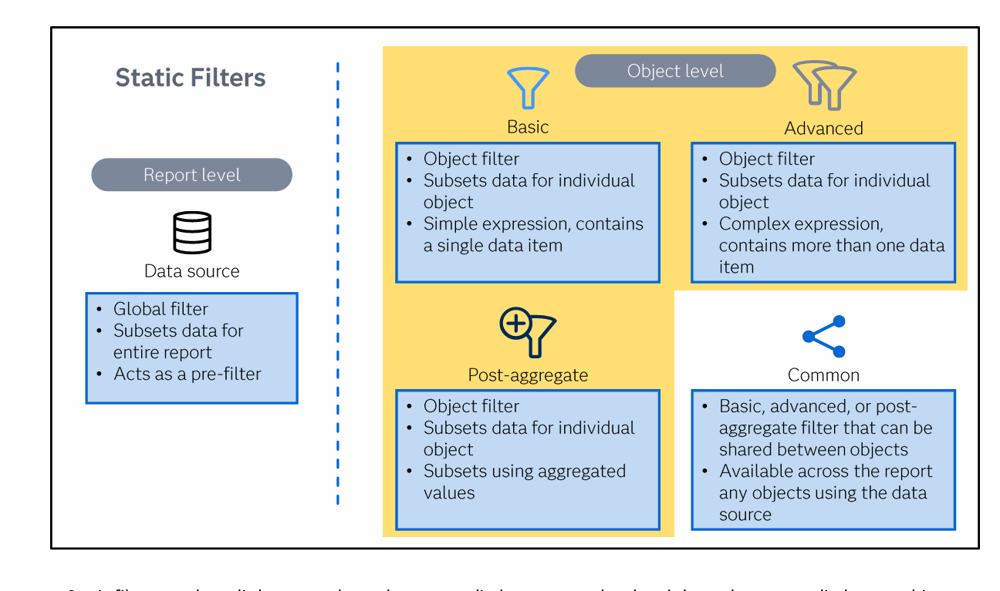

🏷️ Static Filters — Data Source, Basic, Advanced, Post-Aggregate, Common ▶
From course: "Static filters must be defined and applied by the report designer. They include: data source filter, basic filter, advanced filter, post-aggregate filter, and common filter."
📋 From the Course: Static Filters Hierarchy

📋 Complete Comparison
| Feature | 1️⃣ Data Source | 2️⃣ Basic | 3️⃣ Advanced | 4️⃣ Post-Aggregate | 5️⃣ Common |
|---|---|---|---|---|---|
| Level | 📊 Report-level | 📋 Object-level | 📋 Object-level | 📋 Object-level | 📋 Object-level (shared) |
| Expression | Complex Boolean | Simple (1 data item) | Complex (2+ data items) | Aggregated values | Any (Basic/Adv/Post) |
| Applied via | Data source menu | Filters pane | Filters pane + editor | Filters pane | Filters pane or drag from Data pane |
| Affects | ✅ Every object | ❌ 1 object only | ❌ 1 object only | ❌ 1 object only | ✅ Multiple objects (shared) |
| Limit | 1 per data source | No limit | No limit | No limit | No limit |
| Can be Common? | ❌ No | ✅ Yes | ✅ Yes | ✅ Yes | ✅ Already is |
1️⃣ Data Source Filter
"A global filter that subsets data for the entire report. Acts as a pre-filter."
🌍 Applies to every object using that data source
🔢 1 per data source (use complex Boolean for multiple conditions)
📊 Updates cardinalities in Data pane
⚙️ Applied via: Data source menu → Apply data filter
Example: Filter to only show North region → all charts/tables show only North
2️⃣ Basic Filter
"A filter that includes only one data item. Uses Filters pane to click through steps."
📋 Object-level — only affects 1 object
🔢 Contains 1 data item
🖱️ Created via Filters pane (point-and-click)
🔄 Can be converted to a Common filter
Example: Filter list table: Job Title ≠ 'Sales Rep' → bar chart next to it still shows ALL
3️⃣ Advanced Filter
"Build a complex Boolean expression with more than one data item."
📋 Object-level — only affects 1 object
🔢 Contains 2+ data items
✍️ Uses Expression Editor for complex logic
🔄 Can be converted to a Common filter
Example: Sales > $10,000 AND Region = 'North' AND Date > 01JAN2024
4️⃣ Post-Aggregate Filter
"Subsets the report object using aggregated values, not individual values."
📊 Filters after aggregation happens
🔢 Uses results like SUM, AVG, COUNT
⚠️ Detail data option disabled if post-aggregate filter exists
🔄 Can be converted to a Common filter
Example: Show only products where SUM(Sales) > $10K → small products removed
↔️ Vs Basic filter: Sales > $100 removes individual rows
5️⃣ Common Filter
"A basic, advanced, or post-aggregate filter that can be shared between objects."
🔗 Shared across objects using same data source
🌍 Available across the entire report
⚡ Edit once → updates everywhere
🔙 Can revert to object-specific copy
📍 Appears in Data pane under Common Filter group
Example: Filter Region='North' converted to common → drag onto 3 objects → edit to 'East' → all 3 update
🎯 Which Filter to Use?
Want to filter the whole report? → Use Data Source Filter
Need one simple condition on one object? → Use Basic Filter
Need multiple conditions on one object? → Use Advanced Filter
Need to filter by totals after grouping? → Use Post-Aggregate Filter
Want the same filter on multiple objects? → Convert to Common Filter
• Data Source Filter: Report-level, 1 per data source, complex Boolean ⚠️
• Basic Filter: Object-level, 1 data item, Filters pane ✅
• Advanced Filter: Object-level, 2+ data items, Expression Editor ⚠️
• Post-Aggregate Filter: Object-level, uses aggregated values ⚠️
• Common Filter: Shared, available across report, edit once → all update ✅
• Common filters CAN be created from Basic, Advanced, OR Post-Aggregate ✅
• Static filters = defined by report designer (not viewer) ⚠️
Data Source = Doors to building (everyone enters filtered)
Basic = Boxing match (1 vs 1 — one data item)
Advanced = All vs All (multiple conditions)
Post-Aggregate = Post-game stats (after summing)
Common = Community share (use it everywhere)